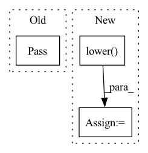

Pattern ID :37679
Before Change
def create_installer_linux(_):
pass
////// Windows //////
After Change
installer_path = os.path.abspath("target/installer")
// Linux application names are lowercase by convention.
name = settings.get("app_name").lower()
cmd = []
cmd += ["fpm"]
cmd += ["-s", "dir"]
// cmd += ["--log", "error"]
cmd += ["-C", installer_path]
cmd += ["-n", name]
cmd += ["-v", settings.get("version")]
cmd += ["--vendor", settings.get("author")]
cmd += ["-t", "deb"]In pattern: SUPERPATTERN
Frequency: 4
Non-data size: 3
Instances Fragment ID: 108244182
Project Name: abe404/root_painter
Commit Name: 13db6abf7e007ee35972129317b73bc71c7b66b3
Time: 2022-01-20
Author: rohan.orton@gmail.com
File Name: painter/src/build/installer.py
M Class Name: AnonimousClass
N Class Name: AnonimousClass
M Method Name: create_installer_linux(1)
N Method Name: create_installer_linux(1)
M Parent Class:
N Parent Class:
M File Name: painter/src/build/installer.py
N File Name: painter/src/build/installer.py
M Start Line: 20
M End Line: 20
N Start Line: 20
N End Line: 39
Before Change
self.noise_model_dict = self.noise_model.to_dict()
def sample_noise_op(self, in_op):
pass
After Change
self.v_c_reg_mapping = None
def sample_noise_op(self, in_op):
errors = self.noise_model_dict[in_op.name.lower() ]
Fragment ID: 108244191
Project Name: mit-han-lab/torchquantum
Commit Name: b325e4f091d9c370a25f85374c26d3d745fe4bf5
Time: 2021-05-10
Author: hanrui@mit.edu
File Name: torchquantum/noise_model.py
M Class Name: NoiseModelTQ
N Class Name: NoiseModelTQ
M Method Name: sample_noise_op(2)
N Method Name: sample_noise_op(2)
M Parent Class: object
N Parent Class: object
M File Name: torchquantum/noise_model.py
N File Name: torchquantum/noise_model.py
M Start Line: 16
M End Line: 16
N Start Line: 18
N End Line: 18
Before Change
word_idx = prompt.split().index(word + punct)
break
except:
pass
if word_idx is None:
raise ValueError(f"Couldn\"t find "{word}" in "{prompt}"")
After Change
curr_token = ""
if word_idx is None:
prompt = prompt.lower()
search_tokens = tokenizer.tokenize(word)
punc_tokens = [p + "</w>" for p in string.punctuation]
// compute the tokens for each word
word_tokens = [tokenizer.tokenize(word) for word in prompt.split()] Fragment ID: 108244189
Project Name: castorini/daam
Commit Name: 854e6ddfdae1781009b31b66b2d5bb15d852fccf
Time: 2022-12-08
Author: alotofcatz@gmail.com
File Name: daam/utils.py
M Class Name: AnonimousClass
N Class Name: AnonimousClass
M Method Name: compute_token_merge_indices(5)
N Method Name: compute_token_merge_indices(5)
M Parent Class:
N Parent Class:
M File Name: daam/utils.py
N File Name: daam/utils.py
M Start Line: 53
M End Line: 90
N Start Line: 54
N End Line: 91